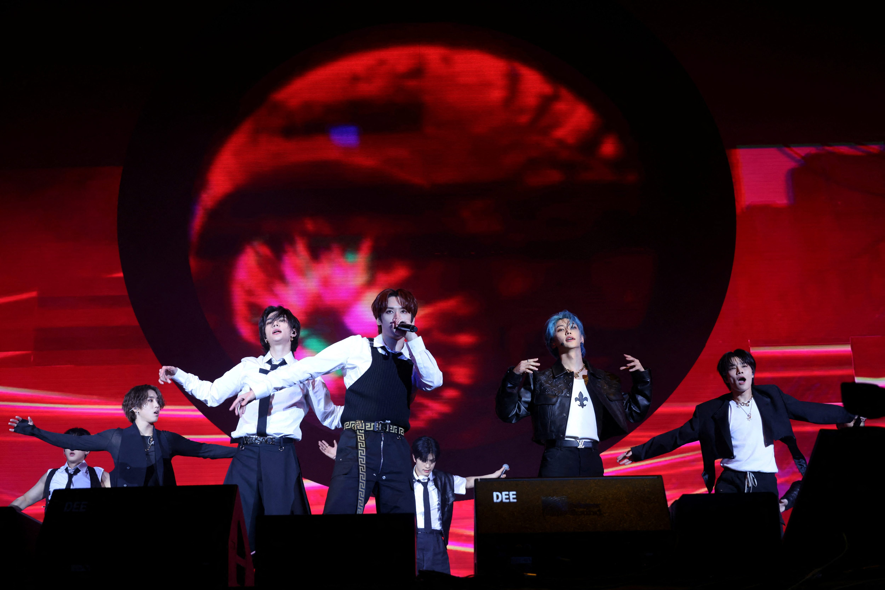

Stray Kids Release "Star, Light (STAY)" Anniversary Single As Heartfelt Gift To Fans

In a touching tribute to the fans who have supported them through eight years of music and growth, Stray Kids has announced the release of a special digital single titled "Star, Light (STAY)" on March 25, 2026. The track, timed to coincide with the group's eighth debut anniversary, represents a heartfelt thank-you letter to their devoted global fanbase.
The announcement was made through JYP Entertainment's official channels on Monday, accompanied by a series of ethereal concept photos showing the eight members bathed in soft starlight. The imagery directly references the single's title and the group's longstanding metaphor comparing their fans (known as STAY) to guiding stars.
"Star, Light (STAY)" will be released on March 25 at 1 PM KST (12 AM EST), exactly eight years after Stray Kids made their official debut with the EP "I Am NOT" on March 25, 2018. The strategic timing underscores the song's purpose as a celebration of the bond between artists and fans.
The Meaning Behind "Star, Light"
According to promotional materials released by JYP Entertainment, "Star, Light (STAY)" draws its title from the group's long-established fan relationship philosophy. Throughout their career, Stray Kids have frequently described STAY as the stars that light their path, while positioning themselves as the kids who follow that light.
The track reportedly features lyrics written collaboratively by the group's producing unit 3RACHA—consisting of leader Bang Chan, rapper Changbin, and rapper/vocalist Han—with additional contributions from other members. This self-produced approach has been a hallmark of Stray Kids' discography and makes the anniversary single feel especially personal.
"We wanted to create something that captures how we feel about STAY after eight years together," Bang Chan explained in a statement accompanying the announcement. "This song is our promise that no matter where we go or what challenges we face, STAY will always be our light. We hope it makes them smile."
The single will not be accompanied by a traditional music video, instead featuring a special "lyric film" that JYP describes as capturing "precious moments between Stray Kids and STAY throughout the years." Fans have speculated this may include concert footage, fan meeting moments, and behind-the-scenes clips from the group's journey.
Eight Years of Stray Kids
Since their 2018 debut, Stray Kids has risen from promising rookies to one of K-pop's most successful and influential groups. Their trajectory has been marked by consistent commercial growth, critical recognition, and an increasingly devoted global fanbase.
The group first gained attention through JYP Entertainment's 2017 reality show "Stray Kids," which documented the formation and training process of the eventual nine-member group (now eight following Woojin's departure in 2019). From the beginning, Stray Kids distinguished themselves through their self-producing capabilities and genre-blending sound.
Their early releases established the group's signature "noise music" style—an intense, maximalist approach that initially divided listeners but gradually won widespread acclaim. Albums like "Go Live" (2020), "NOEASY" (2021), and "MAXIDENT" (2022) pushed the boundaries of K-pop production while achieving remarkable commercial success.
The group's international breakthrough came in 2022 when "ODDINARY" became the first album by a Korean act to debut at number one on the Billboard 200 since BTS in 2021. They have since repeated this achievement multiple times, cementing their status as one of K-pop's biggest international acts.
Throughout 2024 and 2025, Stray Kids embarked on multiple world tours, performing to sold-out stadiums across Asia, Europe, North America, and Australia. Their "MANIAC" and "5-STAR" tours were among the highest-grossing K-pop tours of their respective years, demonstrating the group's enormous live draw.
The STAY Phenomenon
Central to Stray Kids' success has been their uniquely dedicated fanbase. STAY, officially named in August 2018, has grown from a modest initial following to one of K-pop's most organized and passionate fan communities.
What distinguishes STAY from other K-pop fandoms is the perceived closeness between fans and artists. Stray Kids has cultivated this relationship through regular communication via platforms like VLive, Bubble, and YouTube, where members share unfiltered thoughts and directly engage with fan comments.
Bang Chan's weekly "Chan's Room" livestreams, in particular, have become legendary within the fandom for their casual intimacy. Over the years, he has used these streams to comfort fans during difficult times, celebrate achievements together, and share glimpses of the creative process—building a parasocial bond that feels genuine despite the inherent distance.
This relationship has translated into remarkable fan loyalty. STAY consistently dominates voting competitions, streams new releases in coordinated efforts, and supports group and individual projects with equal enthusiasm. The fandom's organizational capabilities have made Stray Kids a formidable force in chart competitions and award shows.
Fan Reactions: Emotional Anticipation
The announcement of "Star, Light (STAY)" has already generated an emotional response from fans worldwide. Social media platforms have been flooded with messages expressing gratitude, anticipation, and tears.
"Eight years and they're still making songs for us, about us," one fan wrote on Twitter. "I don't have words for what this group means to me. Thank you, Stray Kids."
Many fans have noted the timing of the release—coming amid a period of intense K-pop competition as BTS dominates headlines with their comeback. The anniversary single is seen as Stray Kids choosing to focus on their own journey and fan relationship rather than competing for attention.
"They could be trying to grab headlines, but instead they're releasing a love letter to STAY," another fan observed. "This is why we love them. They never forget who matters most."
Streaming preparations have already begun, with fan accounts sharing timezone conversions and streaming guides to ensure "Star, Light (STAY)" achieves strong debut numbers despite being an unexpected release without traditional promotional activities.
Looking Forward
While "Star, Light (STAY)" is positioned as a standalone anniversary release rather than the beginning of a comeback cycle, fans are already speculating about Stray Kids' next full project. The group has maintained a remarkably consistent release schedule throughout their career, typically delivering two to three major releases per year.
JYP Entertainment has not announced specific plans for the remainder of 2026, but industry observers expect another album sometime in the summer or fall. The group is also rumored to be planning additional tour dates following their successful early-year arena shows.
For now, fans are simply preparing to celebrate eight years of Stray Kids and the special gift being offered to them. As one fan message put it: "March 25 isn't just their anniversary. It's ours too."
"Star, Light (STAY)" releases March 25, 2026 at 1 PM KST on all major streaming platforms.